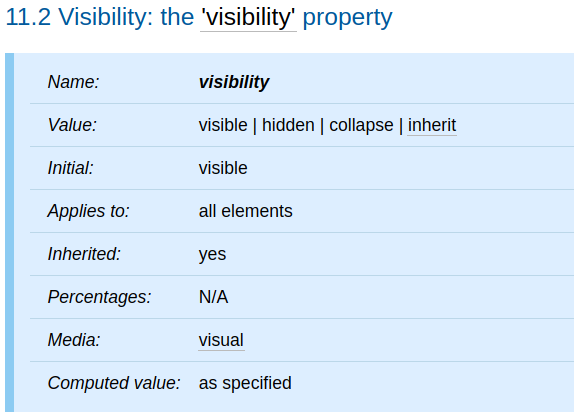
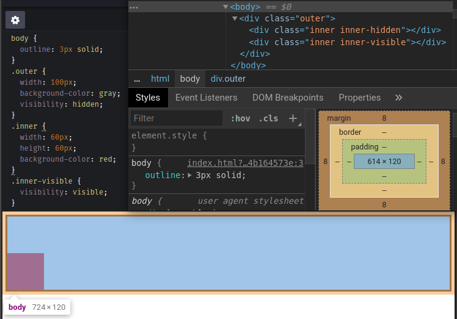
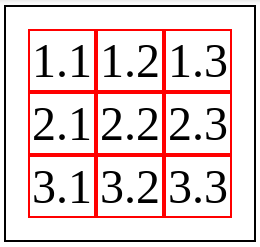
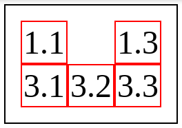
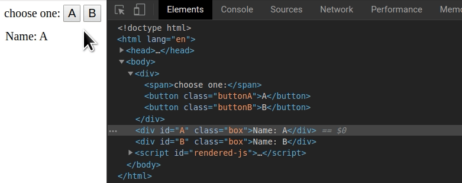

<!DOCTYPE html><html><head><meta charset="utf-8"><title>重新認識 CSS - visibility | Titangene Blog</title><meta http-equiv="X-UA-Compatible" content="IE=edge"><meta name="viewport" content="width=device-width,initial-scale=1,maximum-scale=1"><meta name="HandheldFriendly" content="True"><meta name="apple-mobile-web-app-capable" content="yes"><meta name="author" content="Titangene"><link rel="shortcut icon" href="/favicon.ico"><link rel="alternate" href="/atom.xml" title="Titangene Blog"><meta name="description" content="本篇將介紹 CSS 的 visibility 屬性。"><meta property="og:type" content="article"><meta property="og:title" content="重新認識 CSS - visibility"><meta property="og:url" content="https://titangene.github.io/article/css-visibility.html"><meta property="og:site_name" content="Titangene Blog"><meta property="og:description" content="本篇將介紹 CSS 的 visibility 屬性。"><meta property="og:locale" content="zh_TW"><meta property="og:image" content="https://titangene.github.io/images/cover/css.png"><meta property="article:published_time" content="2019-10-13T13:20:42.000Z"><meta property="article:modified_time" content="2020-02-09T14:59:05.000Z"><meta property="article:author" content="Titangene"><meta property="article:tag" content="IT 鐵人賽"><meta name="twitter:card" content="summary_large_image"><meta name="twitter:image" content="https://titangene.github.io/images/cover/css.png"><meta name="twitter:creator" content="@titangeneTW"><meta name="twitter:site" content="@titangene_blog"><meta property="fb:admins" content="100001106016019"><meta property="fb:app_id" content="2470546159839111"><meta property="og:image:width" content="1200"><meta property="og:image:height" content="630"><meta name="google-site-verification" content="AaJ39L7h-nWwJjXJMhAMtXSF6H6BUgGWXC80kYvLic8"><link href="https://fonts.googleapis.com/css2?family=Roboto&display=swap" rel="stylesheet"><link href="https://fonts.googleapis.com/css?family=Source+Code+Pro&display=swap" rel="stylesheet"><link rel="stylesheet" href="https://cdnjs.cloudflare.com/ajax/libs/font-awesome/5.13.0/css/all.min.css"><link rel="stylesheet" href="https://unpkg.com/gitalk/dist/gitalk.css"><link rel="stylesheet" href="/style.css"><script async src="https://www.googletagmanager.com/gtag/js?id=UA-129758206-1"></script><script>!function(a){function n(){dataLayer.push(arguments)}a.dataLayer=a.dataLayer||[],n("js",new Date),n("config","UA-129758206-1")}(window)</script><script>function setLoadingBarProgress(e){document.getElementById("loading-bar").style.width=e+"%"}</script><meta name="generator" content="Hexo 4.2.0"><link rel="alternate" href="/atom.xml" title="Titangene Blog" type="application/atom+xml"></head></html><body><div id="loading-bar-wrapper"><div id="loading-bar"></div></div><script>setLoadingBarProgress(20)</script><header class="l_header"><div class="wrapper"><div class="nav-main container container--flex"><a class="logo flat-box" href="/">Titangene Blog</a><div class="menu"><ul class="h-list"><li><a class="flat-box nav-home" href="/">Home</a></li><li><a class="flat-box nav-archives" href="/archives">Archives</a></li></ul><div class="underline"></div></div><div class="m_search"><form name="searchform" class="form u-search-form"><input type="text" class="input u-search-input" placeholder="Search"> <i class="fas fa-search"></i></form></div><ul class="switcher h-list"><li class="s-search"><a class="fas fa-search" href="javascript:void(0)"></a></li><li class="s-menu"><a class="fas fa-bars" href="javascript:void(0)"></a></li></ul></div><div class="nav-sub container container--flex"><a class="logo flat-box" href="/">Titangene Blog</a><ul class="switcher h-list"><li class="s-comment"><a class="far fa-comment-alt" href="javascript:void(0)"></a></li><li class="s-top"><a class="fas fa-arrow-up" href="javascript:void(0)"></a></li><li class="s-toc"><a class="fas fa-list-ol" href="javascript:void(0)"></a></li></ul></div></div></header><aside class="menu-phone"><nav><a href="/" class="nav-home nav">Home </a><a href="/archives" class="nav-archives nav">Archives</a></nav></aside><script>setLoadingBarProgress(40)</script><div class="l_body"><div class="container clearfix"><div class="l_main"><article id="post-css-visibility" class="post white-box article-type-post" itemscope itemprop="blogPost"><section class="meta"><h2 class="title"><a href="/article/css-visibility.html">重新認識 CSS - visibility</a></h2><span class="post-time"><span class="post-meta-item-icon"><i class="fa fa-calendar"></i> </span><span class="post-meta-item-text">發表於</span> <time title="建立時間：2019-10-13 21:20:42" itemprop="dateCreated datePublished" datetime="2019-10-13T21:20:42+08:00">2019-10-13 </time><span class="post-meta-divider">|</span> <span class="post-meta-item-icon"><i class="fa fa-calendar-check"></i> </span><span class="post-meta-item-text">更新於</span> <time title="修改時間：2020-02-09 22:59:05" itemprop="dateModified" datetime="2020-02-09T22:59:05+08:00">2020-02-09</time></span> <span class="comments-count"><span class="post-meta-divider">|</span> <span class="post-meta-item-icon"><i class="fas fa-comment"></i> </span><a href="https://titangene.github.io/article/css-visibility.html#comments" class="article-comment-count">留言</a></span><div class="post-category"><span class="post-meta-item-icon"><i class="fa fa-folder"></i> </span><span class="post-meta-item-text">分類於</span> <span itemprop="about" itemscope itemtype="http://schema.org/Thing"><a href="/categories/css/" itemprop="url" rel="index"><span itemprop="name">CSS</span></a></span></div></section><section class="toc-wrapper"><h3>目錄</h3><ol class="toc"><li class="toc-item toc-level-2"><a class="toc-link" href="#前言"><span class="toc-text">前言</span></a></li><li class="toc-item toc-level-2"><a class="toc-link" href="#visibility-屬性"><span class="toc-text">visibility 屬性</span></a><ol class="toc-child"><li class="toc-item toc-level-3"><a class="toc-link" href="#visible"><span class="toc-text">visible</span></a></li><li class="toc-item toc-level-3"><a class="toc-link" href="#hidden"><span class="toc-text">hidden</span></a></li><li class="toc-item toc-level-3"><a class="toc-link" href="#collapse"><span class="toc-text">collapse</span></a></li></ol></li><li class="toc-item toc-level-2"><a class="toc-link" href="#display-none-與-visibility-hidden-的差異"><span class="toc-text">display: none 與 visibility: hidden 的差異</span></a></li><li class="toc-item toc-level-2"><a class="toc-link" href="#visibility-屬性用於動態效果"><span class="toc-text">visibility 屬性用於動態效果</span></a></li></ol></section><section class="article typo"><div class="article-entry" itemprop="articleBody"><p></p><p>本篇將介紹 CSS 的 <code>visibility</code> 屬性。</p><a id="more"></a><h2 id="前言"><a class="header-anchor" href="#前言"></a>前言</h2><blockquote><p>「重新認識 CSS」這個系列名稱的由來就如其名，我想要重新認識它。雖然以前就有學過 CSS，但這次想從 CSS Spec 中學到最原始的定義和內容，更加了解 CSS 的原理，讓我在切版的時候可以更加確定自己在做什麼，我踩到的雷只是因為我不夠了解它才會炸開。</p><p>在這 30 天的內容中，會將 Spec 內看到的資料整理成這個系列，也希望正在學 CSS 的各位可以更加了解它。另外我也會同時將文章發至我的 Blog，如果想直接看文內的程式碼 Demo 畫面，可以到我的 Blog 來看 😃。</p><p>本文同步發表於 iT 邦幫忙：<a href="https://ithelp.ithome.com.tw/articles/10227785" target="_blank" rel="noopener">重新認識 CSS - visibility</a></p><p>「重新認識 CSS」系列文章發文於：</p><ul><li><a href="https://ithelp.ithome.com.tw/users/20117586/ironman/2617" target="_blank" rel="noopener">iT 邦幫忙</a></li><li><a href="https://titangene.github.io/tags/it-%E9%90%B5%E4%BA%BA%E8%B3%BD/">Titangene Blog</a></li></ul></blockquote><h2 id="visibility-屬性"><a class="header-anchor" href="#visibility-屬性"></a><code>visibility</code> 屬性</h2><p><code>visibility</code> 屬性是用於指定是否 render 由元素產生的 box，可用來顯示或隱藏 box，而無需更改文件的佈局。</p><p>下面是 <code>visibility</code> 屬性的定義表：</p><p></p><ul><li>此元素的 initial value 為 <code>visible</code></li><li>適用於所有元素</li><li>此元素為可繼承屬性，descendant 會繼承父元素的 <code>visibility</code> 屬性設定</li></ul><p>下面介紹各屬性值：</p><h3 id="visible"><a class="header-anchor" href="#visible"></a><code>visible</code></h3><ul><li><code>visibility</code> 屬性的 initial value</li><li>產生的 box 是可見的</li></ul><h3 id="hidden"><a class="header-anchor" href="#hidden"></a><code>hidden</code></h3><ul><li>產生的 box 是不可見的 (完全透明，不會繪製 (drawn) 在畫面上)</li><li>但不可見的 box 還是會影響佈局</li><li>如果元素的 descendant 設定 <code>visibility: visible</code>，則它們將是可見的</li></ul><p>如以下範例，<code>.outer</code> 元素設定 <code>visibility: hidden</code>，而 <code>.outer</code> 元素有兩個 descendant，所有 descendant 都會繼承父元素 <code>.outer</code> 的 <code>visibility</code> 屬性設定：</p><ul><li><code>.inner-hidden</code> 元素：因為沒有在此元素設定 <code>visibility: visible</code>，所以元素為不可見的</li><li><code>.inner-visible</code> 元素：也就是畫面中的紅色矩形，因為有在此元素設定 <code>visibility: visible</code>，所以元素就變為可見的</li></ul><p>在紅色矩形上面所空出的空間，其實就是 <code>.inner-hidden</code> 元素佔用的。雖然 <code>.inner-hidden</code> 元素是不可見的，但它只是被隱藏而已，元素所產生的 box 不會從文件佈局中刪除，所以 box 還是會影響佈局。</p><figure class="highlight html"><table><tr><td class="gutter"><pre><span class="line">1</span><br><span class="line">2</span><br><span class="line">3</span><br><span class="line">4</span><br></pre></td><td class="code"><pre><code class="hljs html"><span class="hljs-tag">&lt;<span class="hljs-name">div</span> <span class="hljs-attr">class</span>=<span class="hljs-string">"outer"</span>&gt;</span><br>  <span class="hljs-tag">&lt;<span class="hljs-name">div</span> <span class="hljs-attr">class</span>=<span class="hljs-string">"inner inner-hidden"</span>&gt;</span><span class="hljs-tag">&lt;/<span class="hljs-name">div</span>&gt;</span><br>  <span class="hljs-tag">&lt;<span class="hljs-name">div</span> <span class="hljs-attr">class</span>=<span class="hljs-string">"inner inner-visible"</span>&gt;</span><span class="hljs-tag">&lt;/<span class="hljs-name">div</span>&gt;</span><br><span class="hljs-tag">&lt;/<span class="hljs-name">div</span>&gt;</span><br></code></pre></td></tr></table></figure><figure class="highlight css"><table><tr><td class="gutter"><pre><span class="line">1</span><br><span class="line">2</span><br><span class="line">3</span><br><span class="line">4</span><br><span class="line">5</span><br><span class="line">6</span><br><span class="line">7</span><br><span class="line">8</span><br><span class="line">9</span><br><span class="line">10</span><br><span class="line">11</span><br><span class="line">12</span><br><span class="line">13</span><br><span class="line">14</span><br><span class="line">15</span><br><span class="line">16</span><br></pre></td><td class="code"><pre><code class="hljs css"><span class="hljs-selector-tag">body</span> &#123;<br>  <span class="hljs-attribute">outline</span>: <span class="hljs-number">3px</span> solid;<br>&#125;<br><span class="hljs-selector-class">.outer</span> &#123;<br>  <span class="hljs-attribute">width</span>: <span class="hljs-number">100px</span>;<br>  <span class="hljs-attribute">background-color</span>: gray;<br>  <span class="hljs-attribute">visibility</span>: hidden;<br>&#125;<br><span class="hljs-selector-class">.inner</span> &#123;<br>  <span class="hljs-attribute">width</span>: <span class="hljs-number">60px</span>;<br>  <span class="hljs-attribute">height</span>: <span class="hljs-number">60px</span>;<br>  <span class="hljs-attribute">background-color</span>: red;<br>&#125;<br><span class="hljs-selector-class">.inner-visible</span> &#123;<br>  <span class="hljs-attribute">visibility</span>: visible;<br>&#125;<br></code></pre></td></tr></table></figure><p>Demo：<a href="https://codepen.io/titangene/pen/Baajxbx" target="_blank" rel="noopener">Codepen 連結</a></p><p></p><iframe height="382" style="width:100%" scrolling="no" title="descendant visibility: visible" src="https://codepen.io/titangene/embed/Baajxbx?height=382&theme-id=dark&default-tab=css,result" frameborder="no" allowtransparency="true" allowfullscreen>See the Pen <a href="https://codepen.io/titangene/pen/Baajxbx" target="_blank" rel="noopener">descendant visibility: visible</a> by Titangene (<a href="https://codepen.io/titangene" target="_blank" rel="noopener">@titangene</a>) on <a href="https://codepen.io" target="_blank" rel="noopener">CodePen</a>.</iframe><h3 id="collapse"><a class="header-anchor" href="#collapse"></a><code>collapse</code></h3><ul><li>在表格的 row 或 column (row、row group、column 和 column group 元素，也就是分別為 HTML 中的 <code>tr</code>、<code>tbody</code>、<code>col</code> 和 <code>colgroup</code> 元素) 使用 <code>visibility: collapse</code> 時：<ul><li>會導致整個 row 或 column 從顯示結果中刪除，原本佔用的空間會讓其他內容使用，也就是說顯示結果很像是將 <code>display: none</code> 應用在表格的 row 或 column 一樣</li><li>與 collapsed column 或 row (合併欄或合併列) 相交 (intersect) 的 spanned row 或 column (跨欄或跨列) 的內容會被裁切掉 (clipped)</li><li>可以在不強制重新佈局 (re-layout) 表格的情況下，使用動態效果來刪除表格的 row 或 column</li></ul></li><li>對 table cell (也就是 HTML 中的 <code>td</code> 或 <code>th</code> 元素) 使用 <code>visibility: collapse</code> 時，效果相當於 <code>visibility: hidden</code></li><li>除了上述以外的其他元素使用 <code>visibility: collapse</code> 時，效果相當於 <code>visibility: hidden</code></li></ul><p>下面是表格的範例：</p><figure class="highlight html"><table><tr><td class="gutter"><pre><span class="line">1</span><br><span class="line">2</span><br><span class="line">3</span><br><span class="line">4</span><br><span class="line">5</span><br><span class="line">6</span><br><span class="line">7</span><br><span class="line">8</span><br><span class="line">9</span><br><span class="line">10</span><br><span class="line">11</span><br><span class="line">12</span><br><span class="line">13</span><br><span class="line">14</span><br><span class="line">15</span><br><span class="line">16</span><br><span class="line">17</span><br></pre></td><td class="code"><pre><code class="hljs html"><span class="hljs-tag">&lt;<span class="hljs-name">table</span>&gt;</span><br>  <span class="hljs-tag">&lt;<span class="hljs-name">tr</span>&gt;</span><br>    <span class="hljs-tag">&lt;<span class="hljs-name">td</span>&gt;</span>1.1<span class="hljs-tag">&lt;/<span class="hljs-name">td</span>&gt;</span><br>    <span class="hljs-tag">&lt;<span class="hljs-name">td</span> <span class="hljs-attr">class</span>=<span class="hljs-string">"collapse"</span>&gt;</span>1.2<span class="hljs-tag">&lt;/<span class="hljs-name">td</span>&gt;</span><br>    <span class="hljs-tag">&lt;<span class="hljs-name">td</span>&gt;</span>1.3<span class="hljs-tag">&lt;/<span class="hljs-name">td</span>&gt;</span><br>  <span class="hljs-tag">&lt;/<span class="hljs-name">tr</span>&gt;</span><br>  <span class="hljs-tag">&lt;<span class="hljs-name">tr</span> <span class="hljs-attr">class</span>=<span class="hljs-string">"collapse"</span>&gt;</span><br>    <span class="hljs-tag">&lt;<span class="hljs-name">td</span>&gt;</span>2.1<span class="hljs-tag">&lt;/<span class="hljs-name">td</span>&gt;</span><br>    <span class="hljs-tag">&lt;<span class="hljs-name">td</span>&gt;</span>2.2<span class="hljs-tag">&lt;/<span class="hljs-name">td</span>&gt;</span><br>    <span class="hljs-tag">&lt;<span class="hljs-name">td</span>&gt;</span>2.3<span class="hljs-tag">&lt;/<span class="hljs-name">td</span>&gt;</span><br>  <span class="hljs-tag">&lt;/<span class="hljs-name">tr</span>&gt;</span><br>  <span class="hljs-tag">&lt;<span class="hljs-name">tr</span>&gt;</span><br>    <span class="hljs-tag">&lt;<span class="hljs-name">td</span>&gt;</span>3.1<span class="hljs-tag">&lt;/<span class="hljs-name">td</span>&gt;</span><br>    <span class="hljs-tag">&lt;<span class="hljs-name">td</span>&gt;</span>3.2<span class="hljs-tag">&lt;/<span class="hljs-name">td</span>&gt;</span><br>    <span class="hljs-tag">&lt;<span class="hljs-name">td</span>&gt;</span>3.3<span class="hljs-tag">&lt;/<span class="hljs-name">td</span>&gt;</span><br>  <span class="hljs-tag">&lt;/<span class="hljs-name">tr</span>&gt;</span><br><span class="hljs-tag">&lt;/<span class="hljs-name">table</span>&gt;</span><br></code></pre></td></tr></table></figure><figure class="highlight css"><table><tr><td class="gutter"><pre><span class="line">1</span><br><span class="line">2</span><br><span class="line">3</span><br><span class="line">4</span><br><span class="line">5</span><br><span class="line">6</span><br><span class="line">7</span><br><span class="line">8</span><br><span class="line">9</span><br><span class="line">10</span><br><span class="line">11</span><br></pre></td><td class="code"><pre><code class="hljs css"><span class="hljs-selector-tag">table</span>&#123;<br>  <span class="hljs-attribute">outline</span>: <span class="hljs-number">1px</span> solid;<br>  <span class="hljs-attribute">font-size</span>: <span class="hljs-number">24px</span>;<br>  <span class="hljs-attribute">padding</span>: <span class="hljs-number">10px</span>;<br>&#125;<br><span class="hljs-selector-tag">td</span> &#123;<br>  <span class="hljs-attribute">outline</span>: <span class="hljs-number">1px</span> solid red;<br>&#125;<br><span class="hljs-selector-class">.collapse</span> &#123;<br>  <span class="hljs-attribute">visibility</span>: collapse;<br>&#125;<br></code></pre></td></tr></table></figure><p>Demo：<a href="https://codepen.io/titangene/pen/vYYLVmd" target="_blank" rel="noopener">Codepen 連結</a></p><p>如下圖，此範例為 3 x 3 的表格，在沒有設定 <code>visibility: collapse</code> 之前，表格原本長這樣：</p><p></p><p>如果對 <code>1.2</code> 此 table cell 和第二列設定 <code>visibility: collapse</code>：</p><ul><li><code>1.2</code> 此 table cell 只會被隱藏，不會刪除原本佔用的空間</li><li>第二列會被隱藏，並且刪除原本佔用的空間</li></ul><p></p><iframe height="302" style="width:100%" scrolling="no" title="table row &amp; column：visibility: collapse" src="https://codepen.io/titangene/embed/vYYLVmd?height=302&theme-id=dark&default-tab=css,result" frameborder="no" allowtransparency="true" allowfullscreen>See the Pen <a href="https://codepen.io/titangene/pen/vYYLVmd" target="_blank" rel="noopener">table row &amp; column：visibility: collapse</a> by Titangene (<a href="https://codepen.io/titangene" target="_blank" rel="noopener">@titangene</a>) on <a href="https://codepen.io" target="_blank" rel="noopener">CodePen</a>.</iframe><h2 id="display-none-與-visibility-hidden-的差異"><a class="header-anchor" href="#display-none-與-visibility-hidden-的差異"></a><code>display: none</code> 與 <code>visibility: hidden</code> 的差異</h2><p><code>display: none</code> 和 <code>visibility: hidden</code> 都是可以隱藏元素，但差別在於：</p><ul><li><code>display: none</code> 會將元素所產生的 box 從文件佈局中刪除</li><li><code>visibility: hidden</code> 不會將元素所產生的 box 從文件佈局中刪除</li></ul><p>所以，如果將元素設定 <code>display: none</code>，就會影響到其他元素的佈局，而 <code>visibility: hidden</code> 就不會，因為就只是「真正」意義上的隱藏元素而已。</p><h2 id="visibility-屬性用於動態效果"><a class="header-anchor" href="#visibility-屬性用於動態效果"></a><code>visibility</code> 屬性用於動態效果</h2><p>可以使用 JavaScript 控制哪個元素要顯示或是隱藏。下面是 <code>visibility</code> 屬性的動態效果範例：</p><p>Demo：<a href="https://codepen.io/titangene/pen/dyyGeOo" target="_blank" rel="noopener">Codepen 連結</a></p><p></p><iframe height="293" style="width:100%" scrolling="no" title="dynamic visibility" src="https://codepen.io/titangene/embed/dyyGeOo?height=293&theme-id=dark&default-tab=css,result" frameborder="no" allowtransparency="true" allowfullscreen>See the Pen <a href="https://codepen.io/titangene/pen/dyyGeOo" target="_blank" rel="noopener">dynamic visibility</a> by Titangene (<a href="https://codepen.io/titangene" target="_blank" rel="noopener">@titangene</a>) on <a href="https://codepen.io" target="_blank" rel="noopener">CodePen</a>.</iframe><p>在一開始進入範例頁面時，<code>A</code> 元素是使用 <code>visibility</code> 的預設值 <code>visible</code>，而 <code>B</code> 元素是設定 <code>visibility: hidden</code> 隱藏元素。</p><p>在此範例中，<code>A</code> 元素和 <code>B</code> 元素都是使用絕對定位，並設定在相同的位置，所以當要顯示一個元素，並隱藏另一個元素時，畫面的動態效果就很像是一個元素替換成另一個元素。CSS 樣式如下：</p><figure class="highlight css"><table><tr><td class="gutter"><pre><span class="line">1</span><br><span class="line">2</span><br><span class="line">3</span><br><span class="line">4</span><br><span class="line">5</span><br></pre></td><td class="code"><pre><code class="hljs css"><span class="hljs-selector-class">.box</span> &#123;<br>  <span class="hljs-attribute">position</span>: absolute;<br>  <span class="hljs-attribute">top</span>: <span class="hljs-number">50px</span>;<br>  <span class="hljs-attribute">left</span>: <span class="hljs-number">10px</span>;<br>&#125;<br></code></pre></td></tr></table></figure><p>範例中有兩個按鈕：</p><ul><li>點擊 A 按鈕會顯示 <code>A</code> 元素 (也就是顯示 “Name: A” )，並隱藏 <code>B</code> 元素 (也就是隱藏 “Name: B”)</li><li>點擊 B 按鈕會顯示 <code>B</code> 元素 (也就是顯示 “Name: B” )，並隱藏 <code>A</code> 元素 (也就是隱藏 “Name: A”)</li></ul><p>顯示元素其實就是將元素設定成 <code>visibility: visible</code>，在 JavaScript 可以使用下面程式碼來設定：</p><figure class="highlight javascript"><table><tr><td class="gutter"><pre><span class="line">1</span><br></pre></td><td class="code"><pre><code class="hljs javascript">element.style.visibility = <span class="hljs-string">'visible'</span><br></code></pre></td></tr></table></figure><p>隱藏元素則是元素設定成 <code>visibility: hidden</code>，在 JavaScript 可以使用下面程式碼來設定：</p><figure class="highlight javascript"><table><tr><td class="gutter"><pre><span class="line">1</span><br></pre></td><td class="code"><pre><code class="hljs javascript">element.style.visibility = <span class="hljs-string">'hidden'</span><br></code></pre></td></tr></table></figure><p>這樣就可以實作出 <code>A</code> 和 <code>B</code> 元素切換的動態效果。</p><p>此範例的完整原始碼如下：</p><figure class="highlight html"><table><tr><td class="gutter"><pre><span class="line">1</span><br><span class="line">2</span><br><span class="line">3</span><br><span class="line">4</span><br><span class="line">5</span><br><span class="line">6</span><br><span class="line">7</span><br></pre></td><td class="code"><pre><code class="hljs html"><span class="hljs-tag">&lt;<span class="hljs-name">div</span>&gt;</span><br>  <span class="hljs-tag">&lt;<span class="hljs-name">span</span>&gt;</span>choose one:<span class="hljs-tag">&lt;/<span class="hljs-name">span</span>&gt;</span><br>  <span class="hljs-tag">&lt;<span class="hljs-name">button</span> <span class="hljs-attr">class</span>=<span class="hljs-string">"buttonA"</span>&gt;</span>A<span class="hljs-tag">&lt;/<span class="hljs-name">button</span>&gt;</span><br>  <span class="hljs-tag">&lt;<span class="hljs-name">button</span> <span class="hljs-attr">class</span>=<span class="hljs-string">"buttonB"</span>&gt;</span>B<span class="hljs-tag">&lt;/<span class="hljs-name">button</span>&gt;</span><br><span class="hljs-tag">&lt;/<span class="hljs-name">div</span>&gt;</span><br><span class="hljs-tag">&lt;<span class="hljs-name">div</span> <span class="hljs-attr">id</span>=<span class="hljs-string">"A"</span> <span class="hljs-attr">class</span>=<span class="hljs-string">"box"</span>&gt;</span>Name: A<span class="hljs-tag">&lt;/<span class="hljs-name">div</span>&gt;</span><br><span class="hljs-tag">&lt;<span class="hljs-name">div</span> <span class="hljs-attr">id</span>=<span class="hljs-string">"B"</span> <span class="hljs-attr">class</span>=<span class="hljs-string">"box"</span>&gt;</span>Name: B<span class="hljs-tag">&lt;/<span class="hljs-name">div</span>&gt;</span><br></code></pre></td></tr></table></figure><figure class="highlight css"><table><tr><td class="gutter"><pre><span class="line">1</span><br><span class="line">2</span><br><span class="line">3</span><br><span class="line">4</span><br><span class="line">5</span><br><span class="line">6</span><br><span class="line">7</span><br></pre></td><td class="code"><pre><code class="hljs css"><span class="hljs-selector-tag">div</span>, <span class="hljs-selector-tag">button</span> &#123; <span class="hljs-attribute">font-size</span>: <span class="hljs-number">20px</span> &#125;<br><span class="hljs-selector-class">.box</span> &#123;<br>  <span class="hljs-attribute">position</span>: absolute;<br>  <span class="hljs-attribute">top</span>: <span class="hljs-number">50px</span>;<br>  <span class="hljs-attribute">left</span>: <span class="hljs-number">10px</span>;<br>&#125;<br><span class="hljs-selector-id">#B</span> &#123; <span class="hljs-attribute">visibility</span>: hidden; &#125;<br></code></pre></td></tr></table></figure><figure class="highlight javascript"><table><tr><td class="gutter"><pre><span class="line">1</span><br><span class="line">2</span><br><span class="line">3</span><br><span class="line">4</span><br><span class="line">5</span><br><span class="line">6</span><br><span class="line">7</span><br><span class="line">8</span><br><span class="line">9</span><br><span class="line">10</span><br><span class="line">11</span><br><span class="line">12</span><br><span class="line">13</span><br><span class="line">14</span><br><span class="line">15</span><br><span class="line">16</span><br><span class="line">17</span><br><span class="line">18</span><br><span class="line">19</span><br><span class="line">20</span><br></pre></td><td class="code"><pre><code class="hljs javascript"><span class="hljs-keyword">var</span> buttonA = <span class="hljs-built_in">document</span>.querySelector(<span class="hljs-string">'.buttonA'</span>);<br><span class="hljs-keyword">var</span> buttonB = <span class="hljs-built_in">document</span>.querySelector(<span class="hljs-string">'.buttonB'</span>);<br><br><span class="hljs-function"><span class="hljs-keyword">function</span> <span class="hljs-title">show</span>(<span class="hljs-params">elementIdName</span>) </span>&#123;<br>  <span class="hljs-keyword">var</span> element = <span class="hljs-built_in">document</span>.getElementById(elementIdName);<br>  element.style.visibility = <span class="hljs-string">'visible'</span>;<br>&#125;<br><span class="hljs-function"><span class="hljs-keyword">function</span> <span class="hljs-title">hide</span>(<span class="hljs-params">elementIdName</span>) </span>&#123;<br>  <span class="hljs-keyword">var</span> element = <span class="hljs-built_in">document</span>.getElementById(elementIdName);<br>  element.style.visibility = <span class="hljs-string">'hidden'</span>;<br>&#125;<br><br>buttonA.addEventListener(<span class="hljs-string">'click'</span>, <span class="hljs-function"><span class="hljs-keyword">function</span>(<span class="hljs-params"></span>) </span>&#123;<br>  show(<span class="hljs-string">'A'</span>);<br>  hide(<span class="hljs-string">'B'</span>);<br>&#125;);<br>buttonB.addEventListener(<span class="hljs-string">'click'</span>, <span class="hljs-function"><span class="hljs-keyword">function</span>(<span class="hljs-params"></span>) </span>&#123;<br>  show(<span class="hljs-string">'B'</span>);<br>  hide(<span class="hljs-string">'A'</span>);<br>&#125;);<br></code></pre></td></tr></table></figure><blockquote><p>JavaScript 跑錯棚啦 XD</p></blockquote><p>資料來源：</p><ul><li><a href="https://www.w3.org/TR/CSS22/visufx.html#visibility" target="_blank" rel="noopener">CSS 2.2 - 11.2. Visibility: the <code>visibility</code> property</a></li><li><a href="https://www.w3.org/TR/CSS22/tables.html#dynamic-effects" target="_blank" rel="noopener">CSS 2.2 - 17.5.5. Dynamic row and column effects</a></li><li><a href="https://developer.mozilla.org/en-US/docs/Web/CSS/visibility" target="_blank" rel="noopener"><code>visibility</code> - CSS: Cascading Style Sheets | MDN</a></li></ul></div><div class="article-tags tags"><a href="/tags/it-%E9%90%B5%E4%BA%BA%E8%B3%BD/" title="IT 鐵人賽">IT 鐵人賽</a></div></section><div class="article-share-links"><span>分享：</span> <a class="fab fa-facebook-f" title="Facebook" target="_blank" href="javascript:window.open('https://www.facebook.com/sharer.php?u=https%3A%2F%2Ftitangene.github.io%2Farticle%2Fcss-visibility.html', 'Share on Facebook','width=600, height=600')"></a> <a class="fab fa-twitter" title="Twitter" target="_blank" href="javascript:window.open('https://twitter.com/share?url=https%3A%2F%2Ftitangene.github.io%2Farticle%2Fcss-visibility.html&amp;text=重新認識 CSS - visibility&amp;hashtags=IT鐵人賽&amp;via=titangene_blog', 'Share on Twitter','width=600, height=260')"></a> <a class="fab fa-linkedin-in" title="Linkedin" target="_blank" href="javascript:window.open('https://www.linkedin.com/shareArticle?mini=true&amp;url=https%3A%2F%2Ftitangene.github.io%2Farticle%2Fcss-visibility.html&amp;title=重新認識 CSS - visibility', 'Share on Linkedin','width=600, height=600')"></a> <a class="fab fa-facebook-messenger" title="Facebook Messenger" target="_blank" href="javascript:window.open('http://www.facebook.com/dialog/send?app_id=2470546159839111&amp;link=https%3A%2F%2Ftitangene.github.io%2Farticle%2Fcss-visibility.html&amp;display=popup&amp;redirect_uri=https%3A%2F%2Fwww.facebook.com%2Fdialog%2Freturn%2Fclose%23_%3D_', 'Send in Messenger','width=600, height=600')"></a> <a class="fab fa-telegram-plane" href="https://telegram.me/share/url?url=https%3A%2F%2Ftitangene.github.io%2Farticle%2Fcss-visibility.html&text=重新認識 CSS - visibility" target="_blank"></a></div><nav id="article-nav"><a href="/article/css-overflow.html" id="article-nav-prev" class="article-nav-link-wrap" title="重新認識 CSS - overflow" rel="prev"><strong class="article-nav-caption">Prev</strong><p class="article-nav-title">重新認識 CSS - overflow</p><i class="fas fa-angle-left"></i> </a><a href="/article/css-z-index-and-stacking-context.html" id="article-nav-next" class="article-nav-link-wrap" title="重新認識 CSS - z-index &amp; stacking context" rel="next"><strong class="article-nav-caption">Next</strong><p class="article-nav-title">重新認識 CSS - z-index &amp; stacking context</p><i class="fas fa-angle-right"></i></a></nav><section id="list_related_posts"><h2>相關文章</h2><ul class="related-posts"><li class="related-posts-item"><a class="related-posts-link" href="/article/css-import.html">重新認識 CSS - @import</a><div class="related-posts-item-abstract">CSS 的 @import 規則可以從其他 style sheet 中 import 樣式規則，本篇將介紹如何使用。前言「重新認識 CSS」這個系列名稱的由來就如其名，我想要重新認識它。雖然以前就有學過 CSS，但這次想</div></li><li class="related-posts-item"><a class="related-posts-link" href="/article/css-inheritance.html">重新認識 CSS - Inheritance (繼承)</a><div class="related-posts-item-abstract">今天來介紹 CSS 的 Inheritance (繼承) 以及 inherit 這個關鍵字的屬性值。前言「重新認識 CSS」這個系列名稱的由來就如其名，我想要重新認識它。雖然以前就有學過 CSS，但這次想從 CSS Sp</div></li><li class="related-posts-item"><a class="related-posts-link" href="/article/css-containing-block.html">重新認識 CSS - Containing block</a><div class="related-posts-item-abstract">本篇將介紹 CSS 的 Containing block。前言「重新認識 CSS」這個系列名稱的由來就如其名，我想要重新認識它。雖然以前就有學過 CSS，但這次想從 CSS Spec 中學到最原始的定義和內容，更加了解</div></li><li class="related-posts-item"><a class="related-posts-link" href="/article/css-formatting-context.html">重新認識 CSS - formatting context & independent formatting context</a><div class="related-posts-item-abstract">本篇將介紹 CSS 的 formatting context 和 independent formatting context。前言「重新認識 CSS」這個系列名稱的由來就如其名，我想要重新認識它。雖然以前就有學過 CS</div></li><li class="related-posts-item"><a class="related-posts-link" href="/article/css-media-query.html">重新認識 CSS - Media query</a><div class="related-posts-item-abstract">今天來介紹 CSS 的 media query 和 media feature。前言「重新認識 CSS」這個系列名稱的由來就如其名，我想要重新認識它。雖然以前就有學過 CSS，但這次想從 CSS Spec 中學到最原始的</div></li><li class="related-posts-item"><a class="related-posts-link" href="/article/css-selector-pseudo-class-1.html">重新認識 CSS - Pseudo-class (偽類) (1)</a><div class="related-posts-item-abstract">Selector (選擇器) 可用來選擇 HTML 和 XML 文件中的節點，並將樣式屬性綁定到文件 (HTML 和 XML) 中的元素上。當選擇器與某元素 match 的時候，就可以對選到的元素進行 CSS 樣式設定。</div></li></ul></section><section class="comments" id="comments"><h2>討論區</h2><div id="gitalk-container"></div></section></article><script>window.subData={title:"重新認識 CSS - visibility",tools:!0}</script></div><aside class="l_side"><section class="m_widget about"><div class="avatar-section"><style>.avatar-cover{background:url(/images/avatar_cover.jpg) 0 10%/cover no-repeat}</style><div class="avatar-cover"></div></div><div class="header">Titangene</div><div class="content"><div class="desc">利用 blog 紀錄學習歷程</div></div><div class="content"><meta itemprop="url" content="https://titangene.github.io"><div class="social-wrapper"><a itemprop="sameAs" href="https://github.com/titangene" class="social github" target="_blank" rel="external"><span class="fab fa-github-alt"></span> </a><a itemprop="sameAs" href="https://www.facebook.com/titangene.tw" class="social facebook" target="_blank" rel="external"><span class="fab fa-facebook-square"></span> </a><a itemprop="sameAs" href="https://www.instagram.com/titangene/" class="social instagram" target="_blank" rel="external"><span class="fab fa-instagram"></span> </a><a itemprop="sameAs" href="https://www.flickr.com/photos/titangene" class="social flickr" target="_blank" rel="external"><span class="fab fa-flickr"></span> </a><a itemprop="sameAs" href="/atom.xml" class="social rss" target="_blank" rel="external"><span class="fas fa-rss"></span></a></div></div></section><section class="m_widget facebook_page"><div class="fb-page" data-href="https://www.facebook.com/titangene.blog/" data-width="250" data-small-header="false" data-adapt-container-width="false" data-hide-cover="false" data-show-facepile="true"><blockquote cite="https://www.facebook.com/titangene.blog/" class="fb-xfbml-parse-ignore"><p><a href="https://www.facebook.com/titangene.blog/" class="social facebook" target="_blank"><span class="fab fa-facebook-square"></span></a></p><p><a href="https://www.facebook.com/titangene.blog/" target="_blank" rel="noopener">Titangene Blog</a></p><p>Loading...</p></blockquote></div></section><section class="m_widget recent"><div class="header">Recents</div><div class="content"><ul class="entry"><li><a itemprop="url" class="flat-box" href="/article/recommend-chrome-extension-4.html"><time>2020-08-30</time><div class="name">推薦 Chrome Extension：翻譯篇 - 新同文堂</div></a></li><li><a itemprop="url" class="flat-box" href="/article/recommend-chrome-extension-3.html"><time>2020-08-23</time><div class="name">推薦 Chrome Extension：YouTube 篇</div></a></li><li><a itemprop="url" class="flat-box" href="/article/recommend-chrome-extension-2.html"><time>2020-08-16</time><div class="name">推薦 Chrome Extension：新分頁篇</div></a></li><li><a itemprop="url" class="flat-box" href="/article/recommend-chrome-extension-1.html"><time>2020-08-09</time><div class="name">推薦 Chrome Extension：Markdown &amp; 頁面主題篇</div></a></li><li><a itemprop="url" class="flat-box" href="/article/jest-jquery-dom-testing.html"><time>2020-08-02</time><div class="name">Jest：DOM 測試 (jQuery)</div></a></li><li><a itemprop="url" class="flat-box" href="/article/jest-manual-mocks.html"><time>2020-07-26</time><div class="name">Jest：Manual Mocks</div></a></li><li><a itemprop="url" class="flat-box" href="/article/jest-timer-mocks.html"><time>2020-07-19</time><div class="name">Jest：Timer Mocks</div></a></li></ul></div></section></aside><script>setLoadingBarProgress(60)</script></div></div><footer id="footer" class="clearfix"><div class="social-wrapper"><a href="https://github.com/titangene" class="social github" target="_blank" rel="external"><span class="fab fa-github-alt"></span> </a><a href="https://www.facebook.com/titangene.tw" class="social facebook" target="_blank" rel="external"><span class="fab fa-facebook-square"></span> </a><a href="https://www.instagram.com/titangene/" class="social instagram" target="_blank" rel="external"><span class="fab fa-instagram"></span> </a><a href="https://www.flickr.com/photos/titangene" class="social flickr" target="_blank" rel="external"><span class="fab fa-flickr"></span> </a><a href="/atom.xml" class="social rss" target="_blank" rel="external"><span class="fas fa-rss"></span></a></div><div>© 2018 - 2020 <span itemprop="copyrightHolder">Titangene</span></div><div>Powered by <a href="https://hexo.io/" target="_blank" class="codename" rel="external noopener">Hexo</a> - Theme <a href="https://github.com/stkevintan/hexo-theme-material-flow" target="_blank" class="codename" rel="external noopener">MaterialFlow</a></div><div><a rel="license noopener" href="http://creativecommons.org/licenses/by-nc-sa/4.0/" target="_blank" rel="external noopener"></a></div></footer><script>setLoadingBarProgress(80)</script><script src="//cdnjs.cloudflare.com/ajax/libs/jquery/2.1.4/jquery.min.js"></script><script src="https://cdnjs.cloudflare.com/ajax/libs/clipboard.js/2.0.0/clipboard.min.js"></script><script src="https://unpkg.com/gitalk/dist/gitalk.min.js"></script><script src="/js/jquery.fitvids.js"></script><script>var SEARCH_SERVICE="hexo",ROOT="/";ROOT.endsWith("/")||(ROOT+="/")</script><script src="/js/search.js"></script><script src="/js/app.js"></script><script src="/js/clipboard-use.js"></script><script type="text/javascript">var gitalk=new Gitalk({clientID:"dd1684f31ee17e25c22b",clientSecret:"4b51bb4a5996b04d58821a6e3da8558f23da4cdf",id:window.location.pathname,repo:"hexo-blog",owner:"titangene",admin:"titangene",distractionFreeMode:"true"});gitalk.render("gitalk-container")</script><div id="fb-root"></div><script>window.fbAsyncInit=function(){FB.init({appId:"2470546159839111",autoLogAppEvents:!0,xfbml:!0,version:"v2.11"}),FB.AppEvents.logPageView()},function(e,n,t){var o,s=e.getElementsByTagName(n)[0];e.getElementById(t)||((o=e.createElement(n)).id=t,o.src="//connect.facebook.net/zh_TW/sdk.js",s.parentNode.insertBefore(o,s))}(document,"script","facebook-jssdk")</script><script>setLoadingBarProgress(100)</script></body>